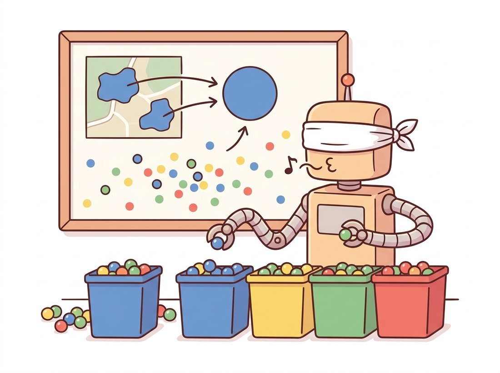

"I sorted your pixels into five tidy groups. You wanted a cat, a sofa, and some sky? I gave you five shades of beige. We clearly value different things."
A Color-Quantizing K-Means Instance With Strong Opinions About k
The simplest way to segment an image is to forget it is an image at all: treat each pixel as an independent point in a feature space, cluster the points, and paint each pixel with its cluster label. This reduces segmentation to a problem that statistics solved decades ago. K-Means partitions the points into a number of groups you specify in advance; Mean-Shift discovers the number of groups itself by climbing the density of the feature space toward its peaks. Both are fast, training-free, and surprisingly effective for color-homogeneous scenes, and both share one revealing flaw: because they ignore which pixels are next to which, they happily assign two pixels on opposite sides of the image to the same region, producing the characteristic salt-and-pepper speckle that the rest of this chapter exists to repair.
In the previous chapter we hunted for sparse keypoints, the rare pixels distinctive enough to match across views. This section inverts the goal. We want a label for every pixel, and we want pixels that look alike to share a label. The cleanest framing of that wish is clustering: define a feature vector for each pixel, drop all of those vectors into a space, and group the ones that fall close together. Segmentation then becomes a side effect of clustering, the cluster index assigned back to the pixel's location is its segment. This view connects directly to the histograms and thresholds of Chapter 2: a threshold is a one-dimensional, two-cluster special case of exactly this idea. The illustration below captures the spirit of the whole chapter: turning one picture into meaningful regions.
1. Pixels as Points in a Feature Space Basic
A grayscale image of $H \times W$ pixels can be unrolled into $HW$ points on the intensity line $[0, 255]$. A color image becomes $HW$ points in a three-dimensional color cube. The choice of which features to use is the single most consequential decision in clustering-based segmentation, more consequential than the clustering algorithm itself. Three common choices, in increasing richness:
- Color only, a 3-vector $(R, G, B)$ or, better, $(L, a, b)$ in a perceptually uniform space. Pixels are grouped purely by appearance; two regions of identical color anywhere in the image merge.
- Color plus position, a 5-vector $(L, a, b, x, y)$. Adding the spatial coordinates, scaled by a weight, biases the clustering toward compact, spatially coherent blobs. This is the feature that makes superpixels work in Section 11.5.
- Color plus texture, where each pixel carries a vector of filter-bank responses. A filter bank is a small set of oriented, multi-scale filters whose outputs summarize the local pattern around a pixel; the Gabor banks of Chapter 4 are the classic example, and the local binary patterns of Chapter 16 are a cheaper alternative. This separates regions that share a mean color but differ in pattern, like grass from a green wall.
Why prefer CIELAB over raw RGB? Because clustering measures distance, and in RGB the Euclidean distance between two colors does not match how different they look to a human eye. CIELAB was designed so that equal Euclidean steps correspond to roughly equal perceived color changes, which means a K-Means boundary drawn at constant distance in Lab lands where a person would also draw it. Converting is one OpenCV call, and it routinely improves the segmentation for free. Figure 11.1.1 shows the same image as a cloud of points in feature space, the geometry that every clustering method below operates on.
2. K-Means: Partition Into k Groups Basic
K-Means is the workhorse. Given $n$ points and a target count $k$, it seeks $k$ centers (centroids) $\mu_1, \dots, \mu_k$ that minimize the total squared distance from each point to its nearest center:
$$J = \sum_{i=1}^{n} \min_{j \in \{1,\dots,k\}} \lVert x_i - \mu_j \rVert^2$$
This objective is non-convex, so K-Means does not solve it exactly. Instead it runs Lloyd's algorithm, an alternation that is guaranteed to decrease $J$ at every step until it stops moving:
- Assign: give each point to its nearest centroid.
- Update: move each centroid to the mean of the points assigned to it.
- Repeat until assignments stop changing.
The catch is that Lloyd's algorithm converges to a local minimum that depends on where the centroids start. Poor initialization gives poor segmentations. The standard fix is k-means++, which seeds centers spread out across the data rather than at random; OpenCV and scikit-learn both default to it. Here is K-Means color segmentation written against OpenCV's cv2.kmeans, which expects the feature matrix as float32.
import cv2
import numpy as np
img = cv2.imread("scene.jpg") # uint8 BGR, shape (H, W, 3)
lab = cv2.cvtColor(img, cv2.COLOR_BGR2LAB) # perceptually uniform space
# Reshape (H, W, 3) -> (H*W, 3) and cast to float32 as cv2.kmeans requires.
features = lab.reshape(-1, 3).astype(np.float32)
K = 5
# criteria: stop when EITHER centers move less than 0.2 (EPS) OR 100 iterations
# (MAX_ITER) pass, whichever comes first. The tuple is (flags, max_iter, epsilon).
criteria = (cv2.TERM_CRITERIA_EPS + cv2.TERM_CRITERIA_MAX_ITER, 100, 0.2)
# attempts=10: run Lloyd 10 times from different seeds, keep the lowest-energy run.
compactness, labels, centers = cv2.kmeans(
features, K, None, criteria, attempts=10, flags=cv2.KMEANS_PP_CENTERS)
centers = centers.astype(np.uint8) # one mean color per cluster
quantized = centers[labels.flatten()] # recolor each pixel by its center
segmented = quantized.reshape(lab.shape)
segmented = cv2.cvtColor(segmented, cv2.COLOR_LAB2BGR)
print("compactness (total within-cluster SSD):", round(compactness, 1))
print("cluster centers (Lab):\n", centers)
# compactness (total within-cluster SSD): 18342105.0
# cluster centers (Lab):
# [[201 126 142] [ 78 121 131] [148 118 168] [122 130 110] [ 49 128 128]]labels array assigns every pixel to one of K clusters; recoloring each pixel with its cluster center produces the familiar posterized segmentation. The returned compactness is the value of the objective $J$, useful for comparing runs.The output is a clean partition into five color regions. But notice what it cannot tell you: it found five colors, not five objects. If the cat and the sofa share a beige, they merge; if the sky shades from pale to deep blue, it may split. And because each pixel was clustered in isolation, single stray pixels of an off-color get their own label scattered across the image. K-Means also demands that you commit to $k$ before you look. Choosing it badly is the most common failure, which the next callout addresses.
The objective $J$ contains no term for spatial location unless you put one there. Two pixels that are visually identical but a thousand pixels apart contribute to the same centroid and receive the same label. This is why pure color K-Means produces a label image full of speckle and disconnected fragments: the algorithm is literally blind to the image grid. Adding scaled $(x, y)$ to the feature vector is the cheapest way to inject spatial coherence, and it is exactly the move SLIC formalizes in Section 11.5. Everything else in this chapter is a richer answer to the same missing-spatial-structure problem.
3. Choosing k: The Elbow and the Silhouette Intermediate
K-Means cannot pick $k$ for you, but two diagnostics narrow the choice. The elbow method plots the objective $J$ (within-cluster sum of squares) against $k$. Adding clusters always lowers $J$, but the curve bends sharply at the "natural" number of clusters and flattens afterward; you pick $k$ at the bend. The silhouette score is more principled: for each point it compares the mean distance to its own cluster against the mean distance to the nearest other cluster, giving a value in $[-1, 1]$, and you pick the $k$ that maximizes the average.
from sklearn.cluster import KMeans
from sklearn.metrics import silhouette_score
import numpy as np
# Subsample 5000 pixels: silhouette on a full image is O(n^2) and far too slow.
rng = np.random.default_rng(0)
sample = features[rng.choice(len(features), 5000, replace=False)]
for k in range(2, 8):
km = KMeans(n_clusters=k, n_init=10, random_state=0).fit(sample)
sil = silhouette_score(sample, km.labels_)
print(f"k={k} inertia={km.inertia_:11.0f} silhouette={sil:.3f}")
# k=2 inertia= 742103104 silhouette=0.512
# k=3 inertia= 391204480 silhouette=0.547 <- best silhouette
# k=4 inertia= 268339712 silhouette=0.498
# k=5 inertia= 201118368 silhouette=0.441
# k=6 inertia= 168442096 silhouette=0.402
# k=7 inertia= 148209760 silhouette=0.388Both diagnostics agree on three clusters for this scene, which is reassuring but not a guarantee. In a cluttered natural image neither metric gives a clean answer, because "the right number of regions" is genuinely ambiguous. That ambiguity is the strongest argument for the next method, which refuses to be told $k$ at all.
4. Mean-Shift: Let the Density Decide Intermediate
Mean-Shift abandons the idea of a fixed cluster count. It views the feature points as samples from an underlying probability density and seeks that density's modes, its local peaks. Every point climbs uphill toward the nearest peak, and points that arrive at the same peak form one cluster. The number of clusters is whatever number of peaks the data happens to have, given one parameter: the bandwidth $h$, the radius of the window that defines "local".
The climb is elegant. From a point $x$, compute the mean of all points within radius $h$, weighted by a kernel, then shift $x$ to that mean. Repeat. The shift vector,
$$m(x) = \frac{\sum_{i} x_i \, g\!\left(\lVert \frac{x - x_i}{h} \rVert^2\right)}{\sum_{i} g\!\left(\lVert \frac{x - x_i}{h} \rVert^2\right)} - x,$$
always points up the density gradient, so iterating it provably converges to a mode. Figure 11.1.2 traces three points shifting toward the two peaks of a 1D density. A small bandwidth finds many narrow modes (oversegmentation); a large bandwidth merges everything into a few broad modes (undersegmentation). Unlike $k$ in K-Means, bandwidth has a physical meaning, a color-distance scale, which makes it easier to set by intuition.
OpenCV ships a specialized image version, cv2.pyrMeanShiftFiltering, that runs Mean-Shift jointly over color (the range parameter sr) and position (the spatial parameter sp), which is precisely the color-plus-position feature of Section 1. It produces a posterized, edge-preserving image; a connected-components pass then turns the flattened colors into labeled regions.
import cv2
import numpy as np
img = cv2.imread("scene.jpg")
# sp = spatial window radius (pixels), sr = color window radius (Lab/BGR units).
# Larger sr merges more colors; larger sp merges over larger spatial extents.
shifted = cv2.pyrMeanShiftFiltering(img, sp=21, sr=40, maxLevel=1)
# After Mean-Shift the image is piecewise-flat; label the flat regions.
gray = cv2.cvtColor(shifted, cv2.COLOR_BGR2GRAY)
n_labels, labels = cv2.connectedComponents(
(cv2.Canny(gray, 1, 1) == 0).astype(np.uint8)) # regions = areas with no internal edge
print("Mean-Shift produced", n_labels, "connected regions (no k specified)")
# Mean-Shift produced 37 connected regions (no k specified)sp and sr implicitly determine how many modes (and therefore how many regions) emerge.
Mean-Shift's gift, automatic cluster count, comes at a cost: it is far slower than K-Means, roughly quadratic in the number of points in a naive implementation, which is why the OpenCV version operates on an image pyramid and why you subsample for the scikit-learn MeanShift estimator. That same mode-seeking iteration reappears as a tracker in Chapter 15, where the "density" is a color histogram and the mode being chased is a moving object.
A hand-written Lloyd's iteration with k-means++ seeding and a convergence test is roughly 40 lines and easy to get subtly wrong (empty clusters, integer overflow in the distance computation, a missing best-of-N-restarts loop). scikit-learn collapses both algorithms to a few lines and adds production niceties:
from sklearn.cluster import KMeans, MeanShift, estimate_bandwidth
# K-Means: parallelized, k-means++ by default, 10 restarts.
km = KMeans(n_clusters=5, n_init=10).fit(features)
# Mean-Shift: bandwidth auto-estimated from a quantile of pairwise distances.
bw = estimate_bandwidth(sample, quantile=0.1, n_samples=500)
ms = MeanShift(bandwidth=bw, bin_seeding=True).fit(sample)
print("Mean-Shift found", len(set(ms.labels_)), "clusters automatically")That is a 40-to-3 line reduction for K-Means alone. The library handles k-means++ initialization, the best-of-n_init restart loop, empty-cluster reassignment, multithreading, and (with MiniBatchKMeans) a streaming variant for images too large to fit a full distance matrix. estimate_bandwidth removes the worst guesswork from Mean-Shift by reading a bandwidth off the data's own distance distribution.
A regional paint retailer wanted to auto-tag product photos by dominant color so its website filter ("show me the sage greens") would actually work. The team's first instinct was a deep classifier, but the catalog had 9,000 SKUs and no labeled training set. An engineer reached instead for K-Means with $k = 5$ in CIELAB, run on a center crop of each photo, and took the largest cluster's center as the dominant color. The result was a 9,000-image pipeline that ran overnight on a single laptop with no GPU and no labels.
The decision that mattered was the color space. Their RGB prototype mislabeled warm grays as beige and cool grays as blue because RGB distances do not track perception; switching the three lines to CIELAB fixed roughly 600 mislabels at a stroke. The lesson: for color-homogeneous product shots, classical clustering in the right space beat a model they could not afford to train, and the only real engineering was choosing features, not algorithms. They later added a tiny learned classifier only for the genuinely hard cases (multicolor patterns), exactly the classical-then-learned escalation this chapter recommends.
5. Why Clustering Is Not Enough Intermediate
Step back and the limitation is structural, not a tuning problem. Clustering segments the feature space, but a segmentation lives in the image grid, and the map between them is lossy in exactly the wrong direction. As the illustration below shows, sorting by appearance alone yields shades rather than objects. Two failures follow inevitably:

- Speckle and fragmentation. Because labels are assigned per pixel with no smoothness term, sensor noise scatters single off-color pixels into the wrong cluster, leaving a label image peppered with one-pixel islands. A morphological opening from Chapter 6 cleans the worst of it, but that is a patch, not a cure.
- Merged distinct objects. Two physically separate objects of the same color receive the same label and become one region, because the feature space cannot represent "these are far apart on the grid." No threshold on color distance can separate them.
Both failures trace to the same root: clustering threw away spatial connectivity in Section 1 and never got it back. The remaining sections of this chapter are progressively richer ways to restore it. Section 11.2 grows regions that are connected by construction. Section 11.3 floods a surface so that basins respect topography. Section 11.4 writes spatial smoothness directly into an energy function. Keep the speckle of pure K-Means in mind as the baseline each method improves on.
The posterized look that K-Means color segmentation produces is not a side effect; it is a product feature elsewhere. The classic GIF "color quantization" that squeezed an image down to a 256-entry palette in the 1990s web was exactly this algorithm, run in RGB with $k = 256$. So is the "reduce colors" slider in nearly every image editor, and so is the dominant-color swatch a streaming service extracts to tint its app around a movie poster. The same three lines that segment a scene badly compress it beautifully: it depends entirely on whether you wanted objects or a palette.
Clustering never left; it moved up a layer. STEGO (Hamilton et al., ICLR 2022) performs unsupervised semantic segmentation by clustering the patch features of a self-supervised DINO backbone, exactly K-Means' "cluster the feature space" idea but with learned features that finally track semantics instead of color. CutLER (Wang et al., CVPR 2023) discovers object masks with normalized cuts on self-supervised features and no labels at all. On the foundation-model side, SAM and its 2024 successor SAM 2 (Ravi et al., ICLR 2025) make grouping promptable: a single click replaces the seed of region growing, and the model returns a coherent mask. The arc is clean: classical methods clustered hand-chosen features and got color regions; modern methods cluster learned features and get objects. The algorithm barely changed; the feature space did. We follow that thread end to end in Chapter 24.
Consider a 100x100 image that is exactly half red (top) and half blue (bottom). (a) Sketch its pixels in 3D RGB feature space. How many clusters does K-Means need to segment it perfectly, and where do the centroids sit? (b) Now suppose a thin white diagonal line crosses both halves. Describe what happens to the line's pixels under pure color K-Means with $k = 2$, and explain why adding the white as a third cluster still leaves the line spatially fragmented. (c) State, in one sentence, the feature you would add to keep the line as a single connected region.
Build the 5-dimensional feature $(L, a, b, w\cdot x, w\cdot y)$ for a natural image and run cv2.kmeans on it for $w \in \{0, 0.5, 2, 8\}$. Display the four label images side by side. Quantify spatial coherence by counting connected components per label (use cv2.connectedComponents) and plot component count versus $w$. Explain why large $w$ drives the result toward the regular tiling you will meet again as superpixels in Section 11.5.
Run cv2.pyrMeanShiftFiltering on one image across a grid of sr (color radius) and sp (spatial radius) values. For each setting, record the number of connected regions and the wall-clock time. Produce two heatmaps (region count, runtime) over the (sp, sr) grid and write a short paragraph relating bandwidth to the over/undersegmentation trade. Which corner of the grid would you choose for a real-time application, and what do you sacrifice?